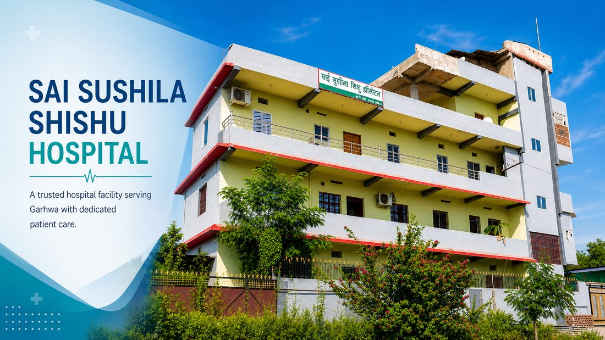
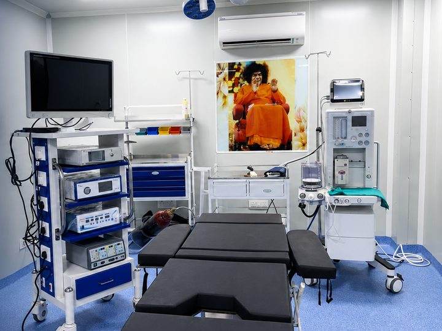
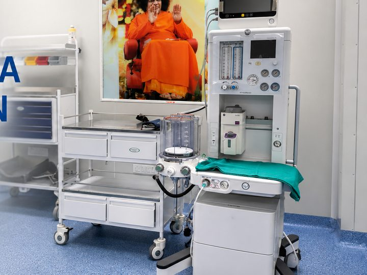
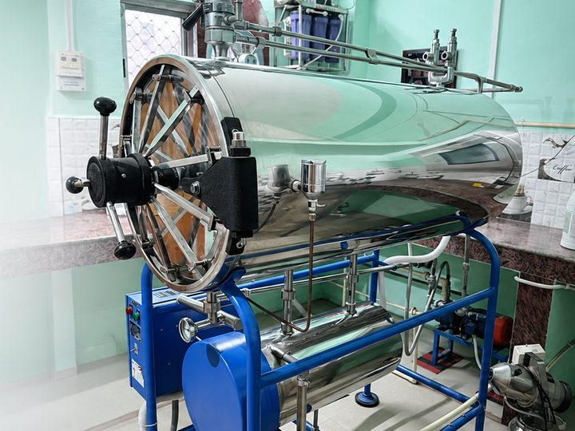

Dr. Vikeerna Bharti — MS Surgery (PGIMER Chandigarh), Former Senior Resident AIIMS, FMAS, FIAGES — holds a surgical OPD at Sai Sushila Sishu Hospital, Garhwa on the 1st & 3rd Sunday of every month. Modular operation theatre on site, so many planned surgeries are done in Garhwa itself.
Dr. Bharti visits on the 1st & 3rd Sunday of every month. These dates update automatically:
⚠️ Please confirm before travelling — dates can occasionally change due to emergency surgery. Call the hospital directly at +91 82641 03707 to book and confirm, or WhatsApp Dr. Bharti at +91 62060 91982.

Patients in Garhwa district have long had to travel to Ranchi or Varanasi for even routine surgery — a full day's journey, an attendant's time, and travel costs, often for a procedure that takes under an hour. Sai Sushila Sishu Hospital, Garhwa now has a modular operation theatre, and Dr. Vikeerna Bharti — MS General Surgery from PGIMER Chandigarh and Former Senior Resident Surgeon at AIIMS — holds a regular surgical OPD here on the 1st and 3rd Sunday of every month.
This means most planned general and laparoscopic surgeries can be completed in Garhwa itself, close to home, with the same technique and standards used in Ranchi. Patients from Nagar Untari, Ranka, Bhawanathpur, Daltonganj (Palamu) and Latehar also attend this OPD.
Dr. Bharti completed his MS General Surgery at PGIMER Chandigarh — an Institute of National Importance (INI) — and every surgery at Garhwa follows the same surgical standards, without compromise. The hospital has been equipped accordingly:



Suitability for surgery at Garhwa is decided after clinical examination. Complex cases, or those needing intensive post-operative care, may be advised surgery at Samford Super Speciality Hospital, Ranchi — this is discussed openly with you and your family at the OPD.
Sunday OPD slots are limited, and the surgery list for the day is planned in advance. To make sure you are seen:
डॉ. विकीर्ण भारती (MS सर्जरी, PGIMER चंडीगढ़; पूर्व सीनियर रेजिडेंट, AIIMS) साईं सुशीला शिशु हॉस्पिटल, गढ़वा में हर महीने के पहले एवं तीसरे रविवार को OPD करते हैं। अस्पताल में मॉड्यूलर ऑपरेशन थिएटर उपलब्ध है, इसलिए पित्त की थैली की पथरी, हर्निया, बवासीर/फिशर/भगंदर, अपेन्डिक्स एवं शरीर की गाँठ का ऑपरेशन गढ़वा में ही संभव है — रांची जाने की आवश्यकता नहीं। नगर उंटारी, रंका, भवनाथपुर, डालटनगंज (पलामू) एवं लातेहार से भी मरीज आते हैं।
रविवार OPD में सीट सीमित है। आने से पहले हॉस्पिटल में कॉल करके तारीख की पुष्टि करें: +91 82641 03707 · रिपोर्ट WhatsApp करें: +91 62060 91982
Dr. Vikeerna Bharti holds a surgical OPD at Sai Sushila Sishu Hospital, Garhwa on the 1st and 3rd Sunday of every month. Call the hospital at +918264103707 to confirm the next date and book your slot, or WhatsApp +916206091982.
Sai Sushila Sishu Hospital, Garhwa has a modular operation theatre, so many planned surgeries can be done in Garhwa itself without travelling to Ranchi. Complex cases or those needing intensive post-operative care may be advised surgery at Samford Super Speciality Hospital, Ranchi. This is decided after clinical examination.
Gallbladder stone surgery, hernia repair, piles/fissure/fistula procedures, appendix surgery, hydrocele, and excision of lumps and swellings are available at Sai Sushila Sishu Hospital, Garhwa in properly evaluated patients.
Call the hospital directly at +918264103707 to book your slot and confirm the date, or WhatsApp your reports to Dr. Bharti at +916206091982 before the OPD Sunday. Booking in advance is recommended because OPD slots on Sunday are limited. Walk-in patients are also seen subject to availability.
Bring your ultrasound or other reports, recent blood tests, previous prescriptions or discharge papers, current medication list, and your insurance card if applicable. If you have no reports, ultrasound can usually be arranged on the same day.
डॉ. विकीर्ण भारती (MS सर्जरी, PGIMER चंडीगढ़) साईं सुशीला शिशु हॉस्पिटल, गढ़वा में हर महीने के पहले एवं तीसरे रविवार को OPD करते हैं। पित्त की थैली की पथरी, हर्निया, बवासीर, अपेंडिक्स एवं गाँठ का ऑपरेशन गढ़वा में ही मॉड्यूलर OT में संभव है। समय लेने हेतु हॉस्पिटल में कॉल करें: +918264103707, या WhatsApp करें: +916206091982